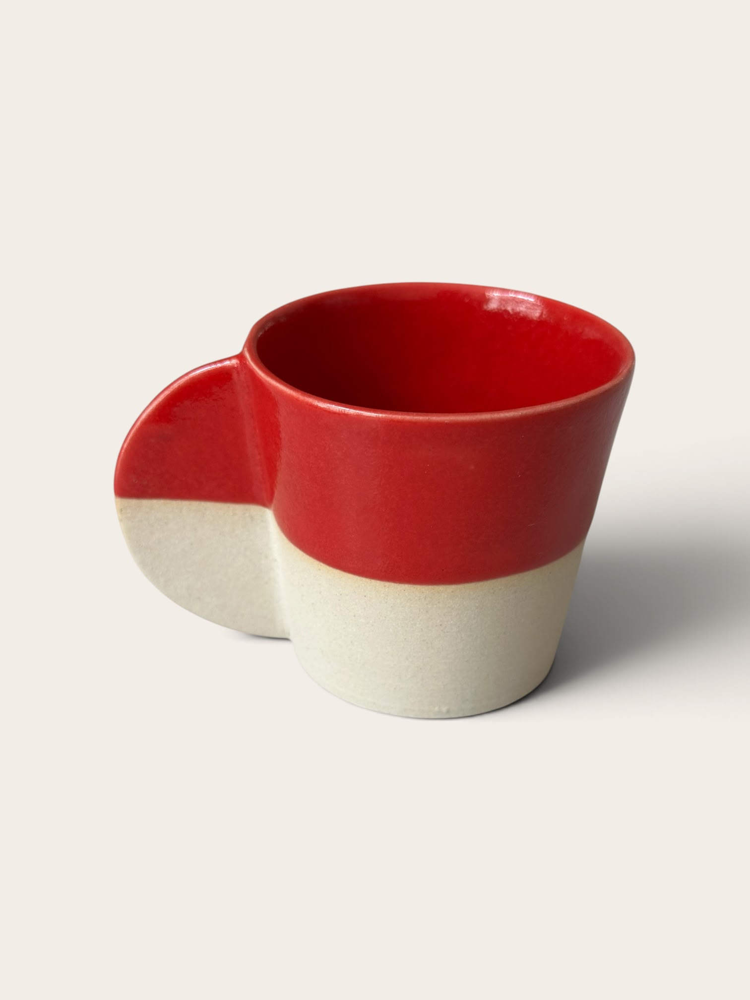
Toprağın fısıltısını şekle ve duyguya dönüştürüyoruz.
Doğal çamurun ellerimizde hayat bulduğu, kusurların ve organik dokuların kutsandığı butik seramik stüdyosuna hoş geldiniz.
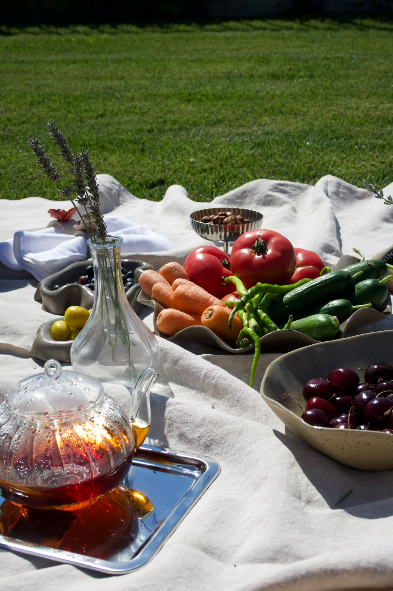

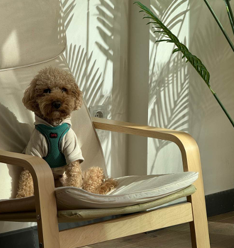
Felsefemiz
“Her kupa yalnızca bir ürün değil, uzun yıllar günlük ritüellerinize eşlik etmek üzere tasarlanmış el yapımı bir parçadır.”
100%Doğal Çamur
TekEşsiz Tasarımlar
Seçki
Tümünü Gör ↗
İmza niteliğindeki seramik tasarımlarımız.
Bardaklar & Kupalar
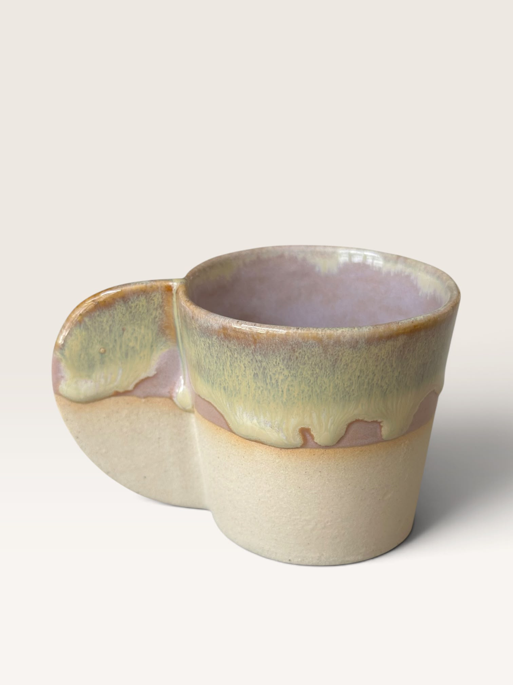
Lila ve Yeşil Sırlı Kupa
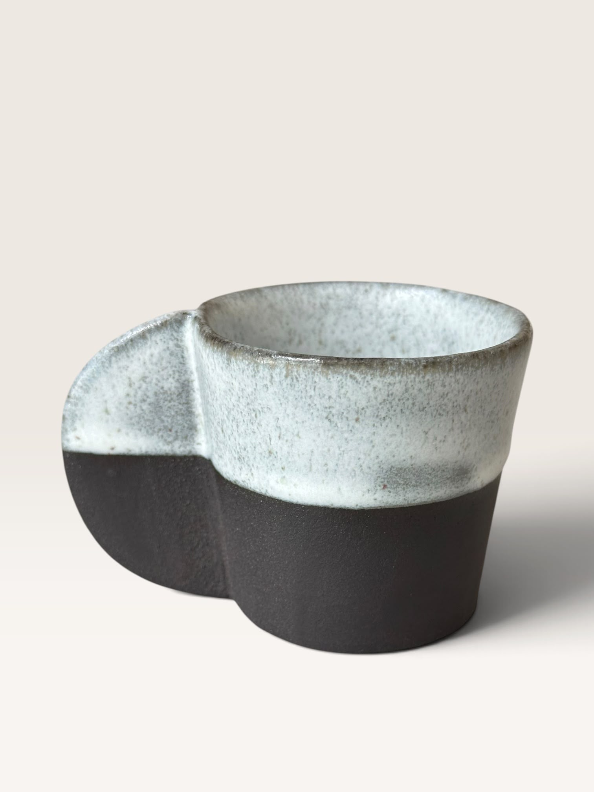
Siyah ve Gri Sırlı Kupa
Zanaat
Çamurdan fırına: adımlarla zanaat yolculuğu.
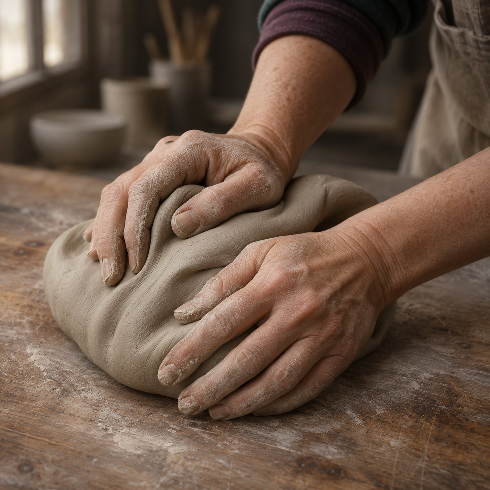
01Yoğurma ve Hazırlık
Çamurun havası alınır ve kıvamı kusursuz olana kadar el gücüyle dövülerek yoğrulur. Sabır gerektiren ilk adımdır.
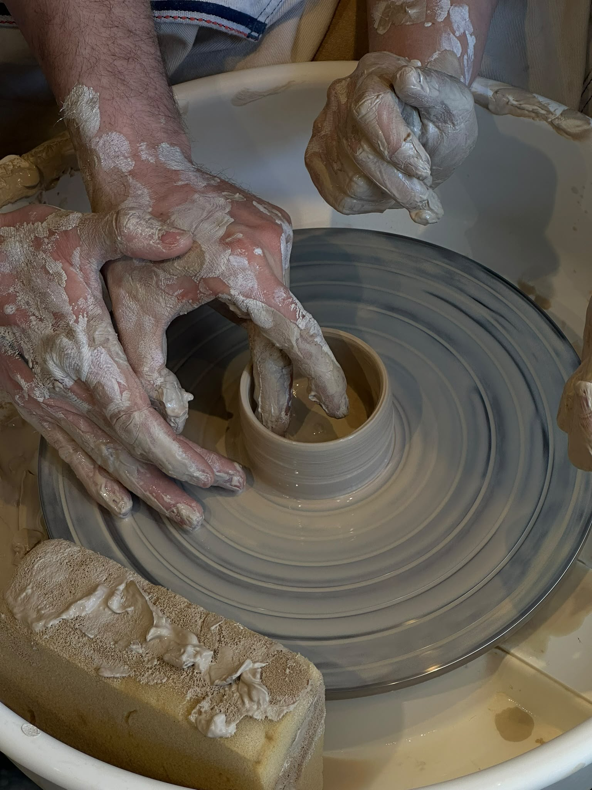
02Şekillendirme
Her ürünü atölyede tasarlıyor, ardından tornada veya serbest elle tek tek şekillendiriyoruz.
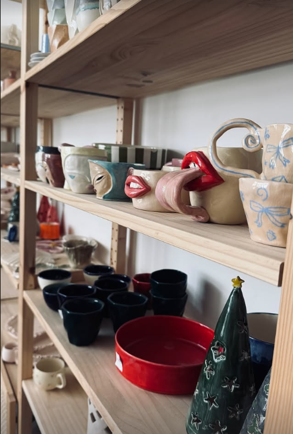
03Yavaş Kurutma
Formunu bulan seramikler çatlamamaları için gölgede günlerce çok yavaş kurumaya bırakılır. Doğal bir sabır sınavıdır.
 04
04
Fırın ve Sırlama
Seramikleri 1200°C’de stoneware olarak pişiriyoruz. Sırların yüksek sıcaklıktaki tepkisi her parçaya farklı renk geçişleri ve dokular kazandırıyor.
Kategoriler
Evleriniz için özel formlar.
Estetik ve işlevselliğin harmanlandığı, farklı kullanım alanlarına yönelik el yapımı kategorilerimizi keşfedin.

Atölye
Kendi sanatınızı şekillendirin.
Bahçeşehir’deki atölyemizde çocuklar ve yetişkinler için seramik yapımı ve seramik boyama workshopları düzenliyoruz.
Workshop tarihleri için randevu alın
Bahçeşehir, Avcılar / İstanbul
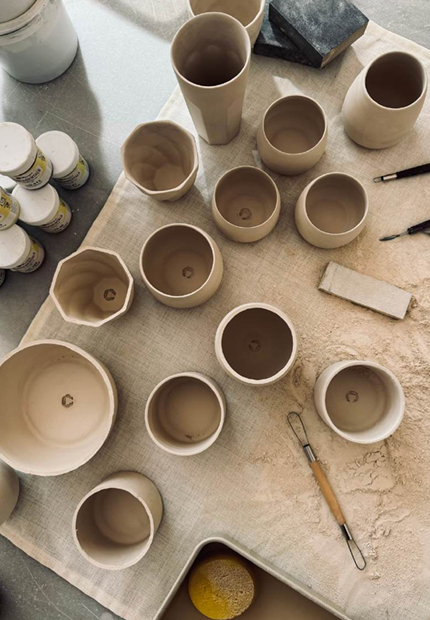
Sosyal Medya
Stüdyodan taze kareler.
Süreci, günlük üretim heyecanımızı ve yeni denemeleri takip edin. Instagram'da bizimle buluşun. @cajuclay
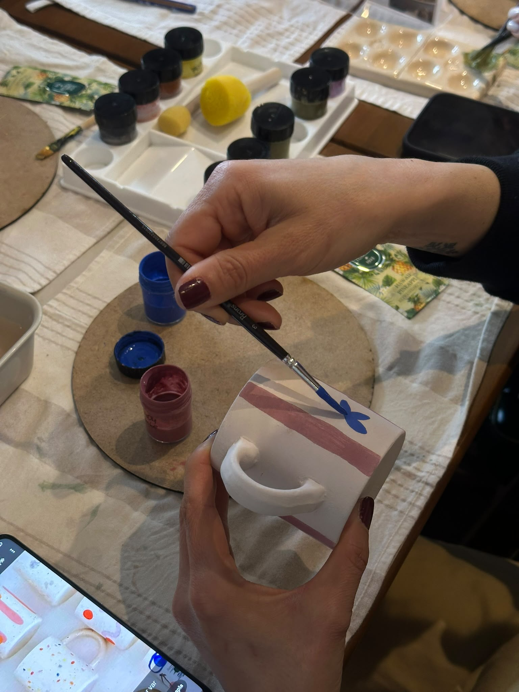
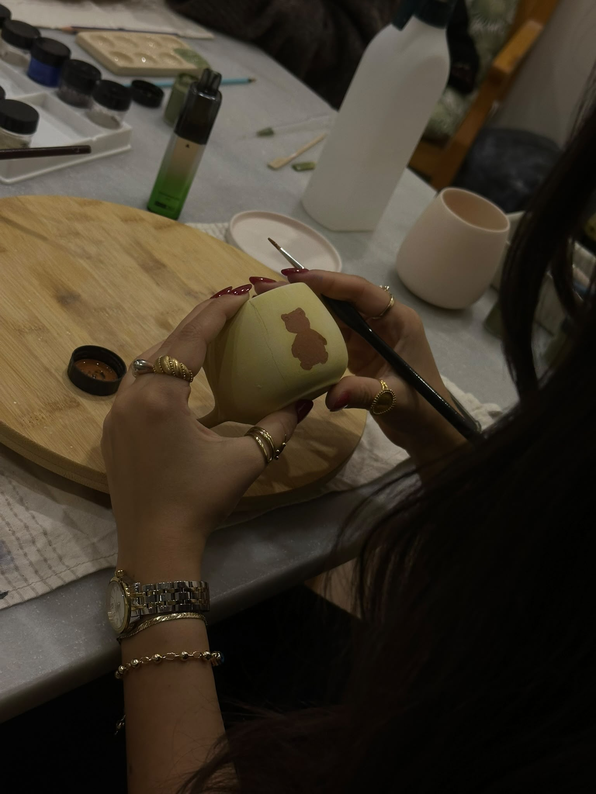
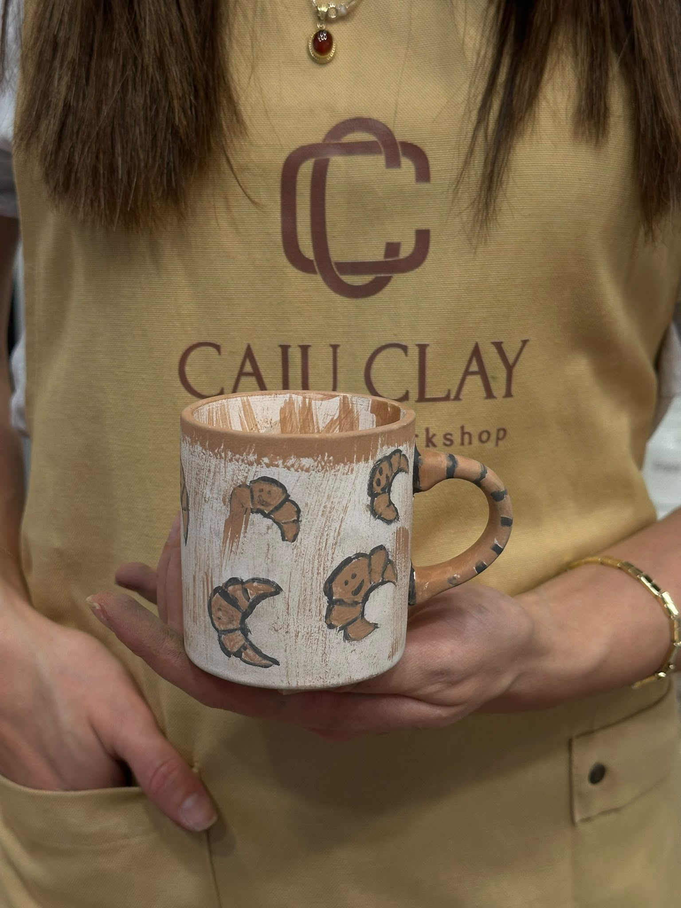
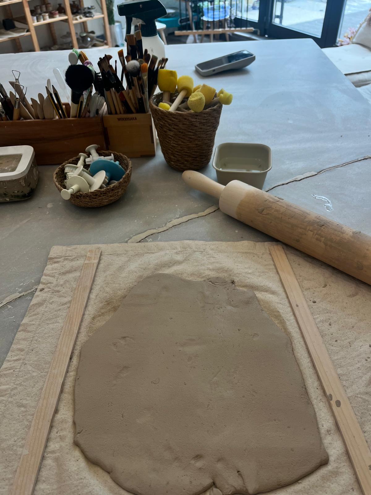
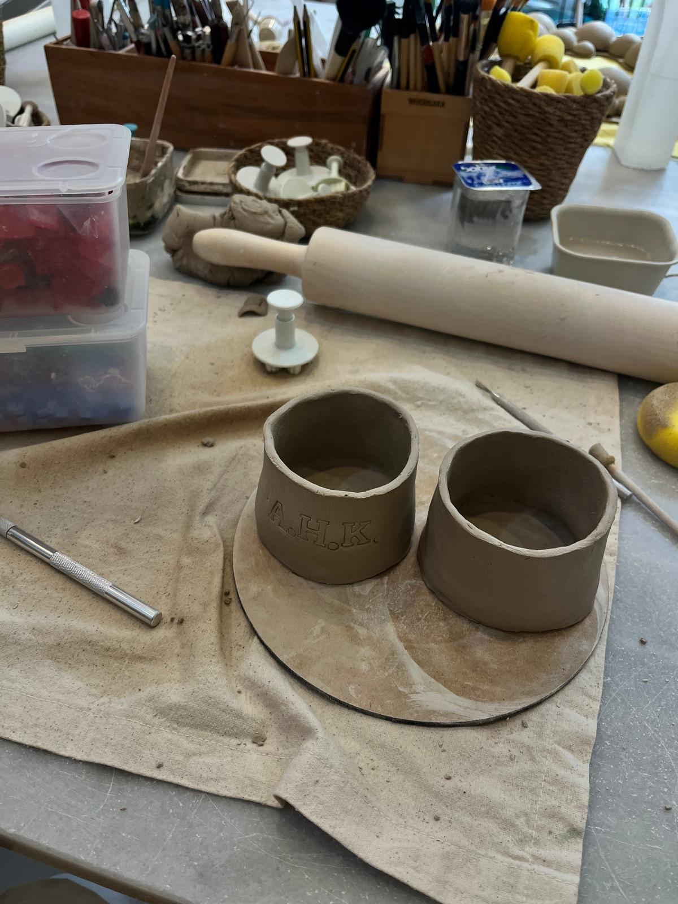
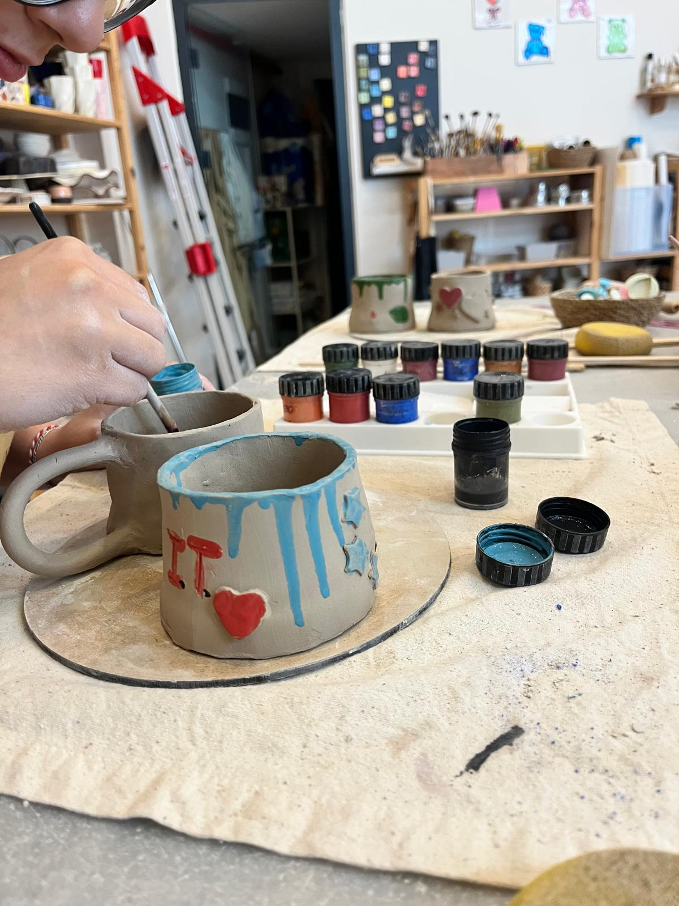